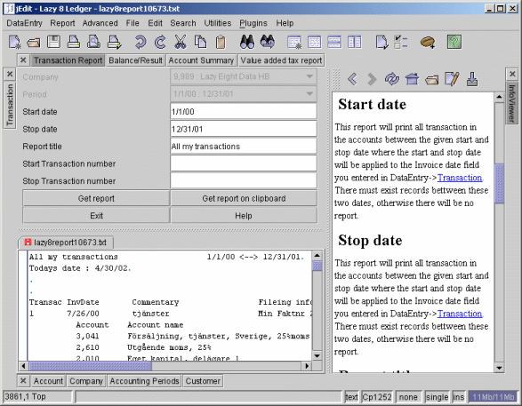

The Lazy8 Ledger Tutorial

Lesson: Reports
This describes how to produce reports. Below is an example of the transaction report which
simply produces a list of all the transactions with an invoice date between the
given dates..

All these report forms are at the top of the main window. Notice in the
picture above that 'Transaction Report' is highlighted among the buttons at the top
of the screen. It was this button I pushed to show this 'Transaction Report' window. For the
purposes of this lesson, I could have chosen any of the buttons there at the top
of the screen because they all work very similar.
In this example screen shown above, you see in the text area the beginning of
the report I produced by pressing the 'Get Report' button.
All the fields described
Company
This report will only do one company at a time.
Normally, you choose the company you want to work with when you first start
Lazy8 Ledger. That company you chose is shown here.
To change this company, you must restart Lazy8 Ledger.
Period
The period is two dates that are the suggested start and end dates for this report.
You may however, overide these dates by changing the two fields below.
Start date
This report will print all transaction in the accounts between the given start
and stop date where the start and stop date will be applied to the Invoice
date field you entered in DataEntry->Transaction.
There must exist records bettween these two dates, otherwise there will
be no report.
Stop date
This report will print all transaction in the accounts between the given start
and stop date where the start and stop date will be applied to the Invoice
date field you entered in DataEntry->Transaction.
There must exist records bettween these two dates, otherwise there will
be no report.
Report title
This is the title of the report that will only appear at the top of the
report. This could be blank if you wish
Start transaction number
This report will print all transaction in the accounts between the given start
and stop transaction number where the start and stop transaction number will be applied to the
transaction number field you got from DataEntry->Transaction.
There must exist records between these two transaction numbers, otherwise there will
be no report. You may also leave this blank to get all transaction numbers.
Stop transaction number
This report will print all transaction in the accounts between the given start
and stop transaction number where the start and stop transaction number will be applied to the
transaction number field you got from DataEntry->Transaction.
There must exist records between these two transaction numbers, otherwise there will
be no report. You may also leave this blank to get all transaction numbers.
Get report Button
Press this button when all the previous fields are entered. The report
will appear in a seperate word processing window
Get report into clipboard Button
Press this button when all the previous fields are entered. The report
will be directly put onto the clipboard. You must then paste the report
into some other wordprocessor or spreadsheet. If you paste into a wordprocessor,
then you will attain the best results if after you have pasted into the
wordprocessor, that you select the entire report and then select -convert
to table- in the wordprocessing program
Exit
Exit this screen
Help
Show a full size help screen about this report producing form.
Copyright
2002 Lazy Eight Data HB